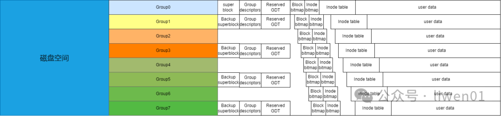
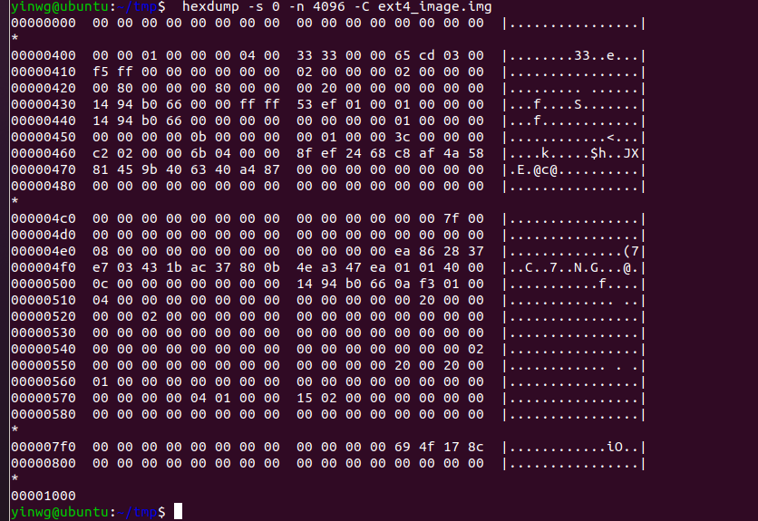
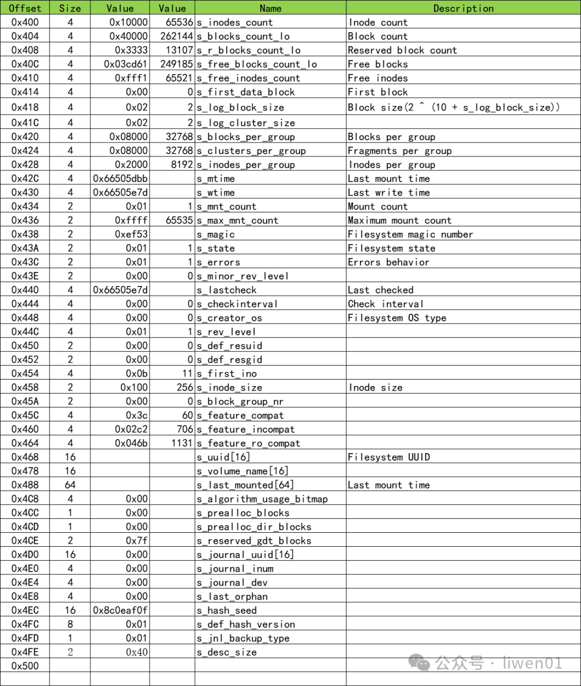
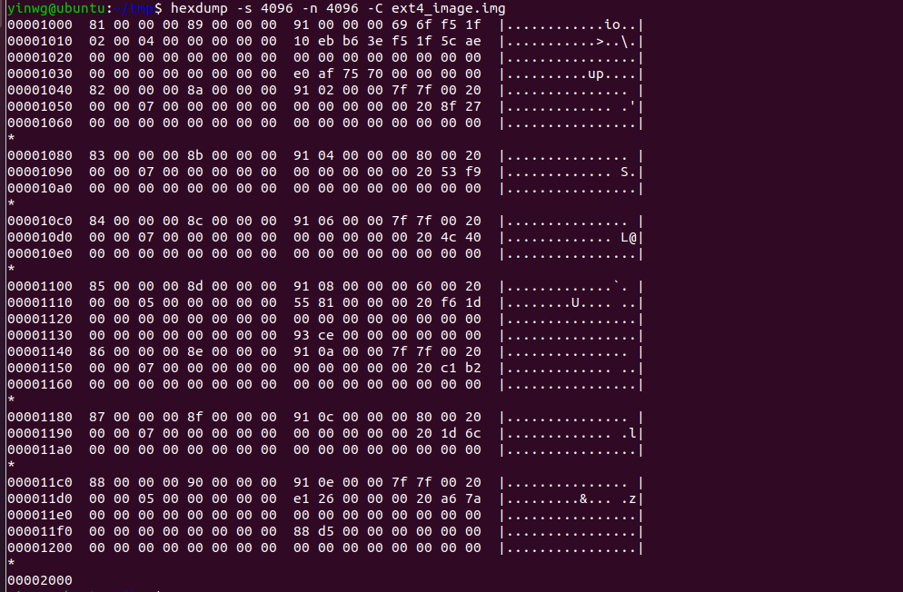
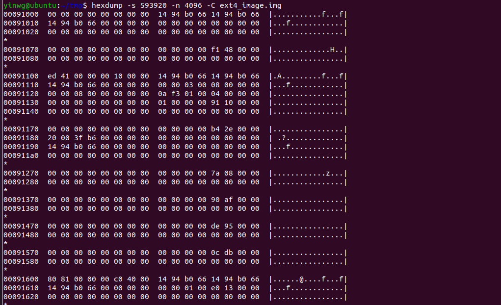
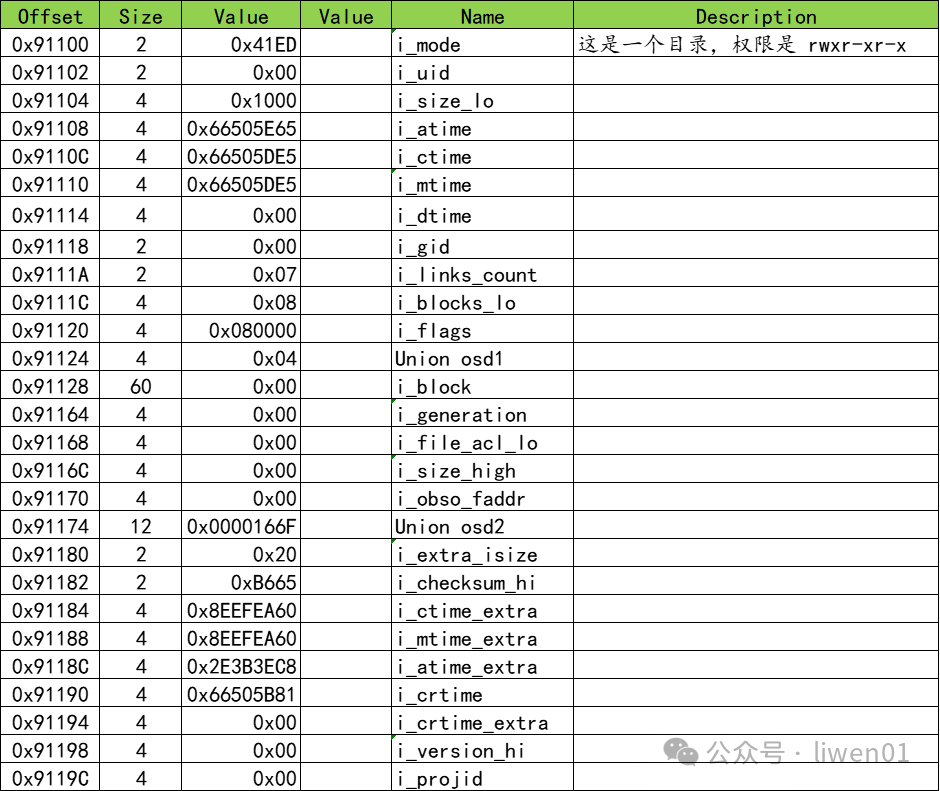
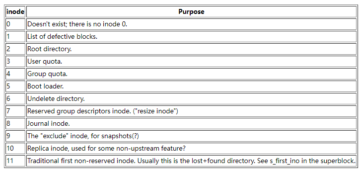
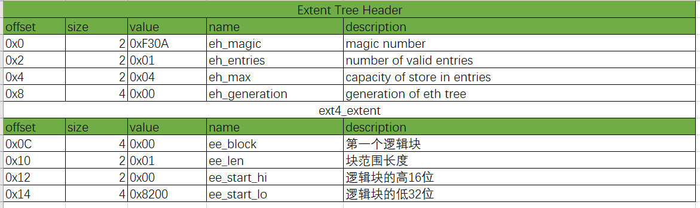
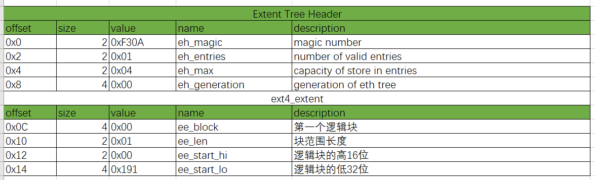
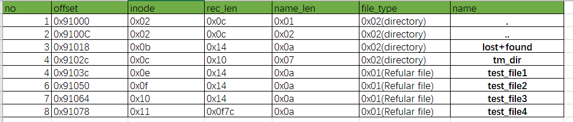

5.2.1. ext4文件系统结构
ext4文件系统官方参考文档 https://ext4.wiki.kernel.org/index.php/Ext4_Disk_Layout
ext4突出的特点是:数据分段管理、多块分配、延迟分配、持久预分配、日志校验、支持更大的文件系统和文件大小
ext4文件系统信息表
yinwg@ubuntu:~/tmp$ dumpe2fs ext4_image.img
dumpe2fs 1.45.5 (07-Jan-2020)
Filesystem volume name: <none>
Last mounted on: <not available>
Filesystem UUID: 8fef2468-c8af-4a58-8145-9b406340a487
Filesystem magic number: 0xEF53
Filesystem revision #: 1 (dynamic)
Filesystem features: has_journal ext_attr resize_inode dir_index filetype extent 64bit flex_bg sparse_super large_file huge_file dir_nlink extra_isize metadata_csum
Filesystem flags: signed_directory_hash
Default mount options: user_xattr acl
Filesystem state: clean
Errors behavior: Continue
Filesystem OS type: Linux
Inode count: 65536
Block count: 262144
Reserved block count: 13107
Free blocks: 249189
Free inodes: 65525
First block: 0
Block size: 4096
Fragment size: 4096
Group descriptor size: 64
Reserved GDT blocks: 127
Blocks per group: 32768
Fragments per group: 32768
Inodes per group: 8192
Inode blocks per group: 512
Flex block group size: 16
Filesystem created: Mon Aug 5 16:57:56 2024
Last mount time: n/a
Last write time: Mon Aug 5 16:57:56 2024
Mount count: 0
Maximum mount count: -1
Last checked: Mon Aug 5 16:57:56 2024
Check interval: 0 (<none>)
Lifetime writes: 533 kB
Reserved blocks uid: 0 (user root)
Reserved blocks gid: 0 (group root)
First inode: 11
Inode size: 256
Required extra isize: 32
Desired extra isize: 32
Journal inode: 8
Default directory hash: half_md4
Directory Hash Seed: ea862837-e703-431b-ac37-800b4ea347ea
Journal backup: inode blocks
Checksum type: crc32c
Checksum: 0x8c174f69
Journal features: (none)
Journal size: 32M
Journal length: 8192
Journal sequence: 0x00000001
Journal start: 0
组 0：(块 0-32767) 校验和 0xae5c [ITABLE_ZEROED]
主 超级块位于 0，组描述符位于 1-1
保留的 GDT 块位于 2-128
块位图位于 129 (+129)，校验和 0xafe0eb10
Inode 位图位于 137 (+137)，校验和 0x70753eb6
Inode 表位于 145-656 (+145)
28521 个可用块，8181 个可用 inode，2 个目录 ，8181 个未使用的inodes
可用块数： 4247-32767
可用inode数： 12-8192
组 1：(块 32768-65535) 校验和 0x278f [INODE_UNINIT, BLOCK_UNINIT, ITABLE_ZEROED]
备份 超级块位于 32768，组描述符位于 32769-32769
保留的 GDT 块位于 32770-32896
块位图位于 130 (bg #0 + 130)，校验和 0x00000000
Inode 位图位于 138 (bg #0 + 138)，校验和 0x00000000
Inode 表位于 657-1168 (bg #0 + 657)
32639 个可用块，8192 个可用 inode，0 个目录 ，8192 个未使用的inodes
可用块数： 32897-65535
可用inode数： 8193-16384
组 2：(块 65536-98303) 校验和 0xf953 [INODE_UNINIT, BLOCK_UNINIT, ITABLE_ZEROED]
块位图位于 131 (bg #0 + 131)，校验和 0x00000000
Inode 位图位于 139 (bg #0 + 139)，校验和 0x00000000
Inode 表位于 1169-1680 (bg #0 + 1169)
32768 个可用块，8192 个可用 inode，0 个目录 ，8192 个未使用的inodes
可用块数： 65536-98303
可用inode数： 16385-24576
组 3：(块 98304-131071) 校验和 0x404c [INODE_UNINIT, BLOCK_UNINIT, ITABLE_ZEROED]
备份 超级块位于 98304，组描述符位于 98305-98305
保留的 GDT 块位于 98306-98432
块位图位于 132 (bg #0 + 132)，校验和 0x00000000
Inode 位图位于 140 (bg #0 + 140)，校验和 0x00000000
Inode 表位于 1681-2192 (bg #0 + 1681)
32639 个可用块，8192 个可用 inode，0 个目录 ，8192 个未使用的inodes
可用块数： 98433-131071
131071¨inode数： 24577-32768
组 4：(块 131072-163839) 校验和 0x1df6 [INODE_UNINIT, ITABLE_ZEROED]
块位图位于 133 (bg #0 + 133)，校验和 0xce938155
Inode 位图位于 141 (bg #0 + 141)，校验和 0x00000000
Inode 表位于 2193-2704 (bg #0 + 2193)
24576 个可用块，8192 个可用 inode，0 个目录 ，8192 个未使用的inodes
可用块数： 139264-163839
可用inode数： 32769-40960
组 5：(块 163840-196607) 校验和 0xb2c1 [INODE_UNINIT, BLOCK_UNINIT, ITABLE_ZEROED]
备份 超级块位于 163840，组描述符位于 163841-163841
保留的 GDT 块位于 163842-163968
块位图位于 134 (bg #0 + 134)，校验和 0x00000000
Inode 位图位于 142 (bg #0 + 142)，校验和 0x00000000
Inode 表位于 2705-3216 (bg #0 + 2705)
32639 个可用块，8192 个可用 inode，0 个目录 ，8192 个未使用的inodes
可用块数： 163969-196607
可用inode数： 40961-49152
组 6：(块 196608-229375) 校验和 0x6c1d [INODE_UNINIT, BLOCK_UNINIT, ITABLE_ZEROED]
块位图位于 135 (bg #0 + 135)，校验和 0x00000000
Inode 位图位于 143 (bg #0 + 143)，校验和 0x00000000
Inode 表位于 3217-3728 (bg #0 + 3217)
32768 个可用块，8192 个可用 inode，0 个目录 ，8192 个未使用的inodes
可用块数： 196608-229375
可用inode数： 49153-57344
组 7：(块 229376-262143) 校验和 0x7aa6 [INODE_UNINIT, ITABLE_ZEROED]
备份 超级块位于 229376，组描述符位于 229377-229377
保留的 GDT 块位于 229378-229504
块位图位于 136 (bg #0 + 136)，校验和 0xd58826e1
Inode 位图位于 144 (bg #0 + 144)，校验和 0x00000000
Inode 表位于 3729-4240 (bg #0 + 3729)
32639 个可用块，8192 个可用 inode，0 个目录 ，8192 个未使用的inodes
可用块数： 229505-262143
可用inode数： 57345-65536
5.2.1.1. ext4磁盘布局
从文首的文件系统信息表可以看出，1G大小的空间，ext4文件系统将其分割为8个Group

从文首的文件系统信息表可以看出，主超级块的信息在0号group，每个block大小为4096byte

对超级块的部分数据进行解析

备注
超级块中的主要内容有：文件系统信息、块大小和块组信息、inode信息、文件系统大小和使用情况、日志相关信息、挂载信息、校验和备份信息。其他Group中存在 超级块的备份信息，如果主超级块损坏，可以从备份区恢复
5.2.1.2. Group descriptors组描述
在ext4文件系统中，Group Descriptor(块组描述符)是一个关键的结构，用于描述和管理文件系统的块组(Block Group).每个块组包含文件系统中的一部分数据块和inode，并拥有自己的 元数据来管理这些资源。Group Descriptor在超级块之后，是文件系统的组织和管理的核心部分
对Group Descriptor数据进行解析，可以看到详细的group信息

5.2.1.3. Block bitmap块位图
Block bitmap块位图用于管理块组中的数据块，Block bitmap记录了块组中每个块的使用状态，标识哪些块是已使用的，哪些是空闲的，里面的数据是按位标记，1表示该块已使用
5.2.1.4. Inode bitmap索引节点位图
与Block bitmap工作原理类似，Inode bitmap用于管理块组(Block Group)中的inode. Inode bitmap记录了块组中每个inode的使用状态，标识哪些已使用哪些空闲
备注
res/ext4_inode_bitmap_info.png
5.2.1.5. Inode table索引节点表
索引节点表是一个相对比较复杂的一个元文件，从文首的文件系统信息表可以看出
Inode size: 256
Inode 表位于 145-656 (+145)
一个索引节点的大小为256Byte
从Group 0信息中可以看出Group 0的索引表的位置在145-656块的位置

对第2个索引节点参数进行解析

在ext4文件系统中，0~11号索引是特殊定义的索引节点

inode是一个数据结构，代表文件系统中的每个文件和目录。每个inode包含了有关文件的元数据，例如文件大小、权限、所有者信息等。 inode.i_block 是inode结构中用于
指向文件数据块的字段，是文件系统如何找到并访问文件内容的核心部分
5.2.1.5.1. 通过inode定位到block
yinwg@ubuntu:~/tmp/tmp/tmp_dir$ tree
.
└── test_file
如果要找到test_file对应的block，可以使用stat找到test_file的inode节点.
yinwg@ubuntu:~/tmp/tmp/tmp_dir$ stat test_file
文件：test_file
大小：43 块：8 IO 块：4096 普通文件
设备：71ah/1818d Inode：13 硬链接：1
权限：(0777/-rwxrwxrwx) Uid：( 0/ root) Gid：( 0/ root)
最近访问：2024-08-05 18:06:54.652904399 +0800
最近更改：2024-08-05 18:06:51.988886744 +0800
最近改动：2024-08-05 18:06:51.988886744 +0800
创建时间：-
定位到inode所在的位置
145 * 4096 + (13 - 1) * 256 = 593920 + 3072 = 596992 = 0x91C00
inode索引节点数据
yinwg@ubuntu:~/tmp$ hexdump -s 596992 -C -n 4096 ext4_image.img
00091c00 ff 81 00 00 2b 00 00 00 3e a4 b0 66 3b a4 b0 66 |....+...>..f;..f|
00091c10 3b a4 b0 66 00 00 00 00 00 00 01 00 08 00 00 00 |;..f............|
00091c20 00 00 08 00 01 00 00 00 0a f3 01 00 04 00 00 00 |................|
00091c30 00 00 00 00 00 00 00 00 01 00 00 00 00 82 00 00 |................|
00091c40 00 00 00 00 00 00 00 00 00 00 00 00 00 00 00 00 |................|
*
00091c60 00 00 00 00 e3 c8 2d 4f 00 00 00 00 00 00 00 00 |......-O........|
00091c70 00 00 00 00 00 00 00 00 00 00 00 00 0e e7 00 00 |................|
00091c80 20 00 47 ba 60 db c4 eb 60 db c4 eb 3c 1f aa 9b | .G.`...`...<...|
00091c90 00 a4 b0 66 00 50 05 a7 00 00 00 00 00 00 00 00 |...f.P..........|
00091ca0 00 00 00 00 00 00 00 00 00 00 00 00 00 00 00 00 |................|
i_block 的偏移量是0x28,对i_block的数据进行解析：

查看文件系统0x8200 block数据
yinwg@ubuntu:~/tmp$ hexdump -s 136314880 -C -n 4096 ext4_image.img
08200000 74 65 73 74 20 73 74 72 69 6e 67 20 2e 2e 2e 2e |test string ....|
08200010 2e 2e 20 66 6f 72 20 65 78 74 34 20 66 69 6c 65 |.. for ext4 file|
08200020 20 6f 70 65 72 61 74 69 6f 6e 0a 00 00 00 00 00 | operation......|
08200030 00 00 00 00 00 00 00 00 00 00 00 00 00 00 00 00 |................|
*
08201000
文件test_file数据内容
yinwg@ubuntu:~/tmp/tmp/tmp_dir$ hexdump -C test_file
00000000 74 65 73 74 20 73 74 72 69 6e 67 20 2e 2e 2e 2e |test string ....|
00000010 2e 2e 20 66 6f 72 20 65 78 74 34 20 66 69 6c 65 |.. for ext4 file|
00000020 20 6f 70 65 72 61 74 69 6f 6e 0a | operation.|
0000002b
两种方法查看到的数据是一致的
5.2.1.5.2. Directory Entries目录项
由上文可知，根目录对应的inode是2，查看根目录索引节点位置
145 * 4096 + (2 - 1) * 256 = 593920 + 256 = 594176 = 0x91100
查看inode数据
yinwg@ubuntu:~/tmp$ hexdump -s 594176 -C -n 4096 ext4_image.img
00091100 ed 41 00 00 00 10 00 00 ef a3 b0 66 ee a3 b0 66 |.A.........f...f|
00091110 ee a3 b0 66 00 00 00 00 00 00 04 00 08 00 00 00 |...f............|
00091120 00 00 08 00 01 00 00 00 0a f3 01 00 04 00 00 00 |................|
00091130 00 00 00 00 00 00 00 00 01 00 00 00 91 10 00 00 |................|
00091140 00 00 00 00 00 00 00 00 00 00 00 00 00 00 00 00 |................|
解析inode数据

查看root inode对应的数据
yinwg@ubuntu:~/tmp$ hexdump -s 17371136 -n 4096 -C ext4_image.img
01091000 02 00 00 00 0c 00 01 02 2e 00 00 00 02 00 00 00 |................|
01091010 0c 00 02 02 2e 2e 00 00 0b 00 00 00 14 00 0a 02 |................|
01091020 6c 6f 73 74 2b 66 6f 75 6e 64 00 00 0c 00 00 00 |lost+found......|
01091030 10 00 07 02 74 6d 70 5f 64 69 72 00 0e 00 00 00 |....tmp_dir.....|
01091040 14 00 0a 01 74 65 73 74 5f 66 69 6c 65 31 00 00 |....test_file1..|
01091050 0f 00 00 00 14 00 0a 01 74 65 73 74 5f 66 69 6c |........test_fil|
01091060 65 32 00 00 10 00 00 00 14 00 0a 01 74 65 73 74 |e2..........test|
01091070 5f 66 69 6c 65 33 00 00 11 00 00 00 7c 0f 0a 01 |_file3......|...|
01091080 74 65 73 74 5f 66 69 6c 65 34 00 00 00 00 00 00 |test_file4......|
01091090 00 00 00 00 00 00 00 00 00 00 00 00 00 00 00 00 |................|
